Sample Screenshot
 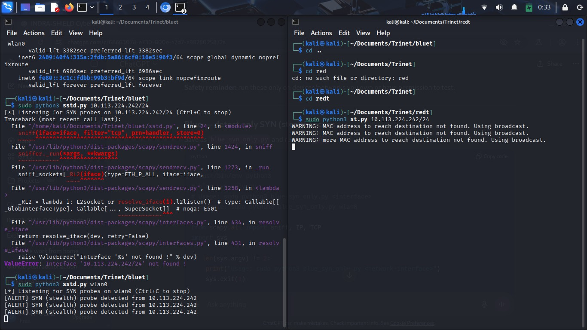
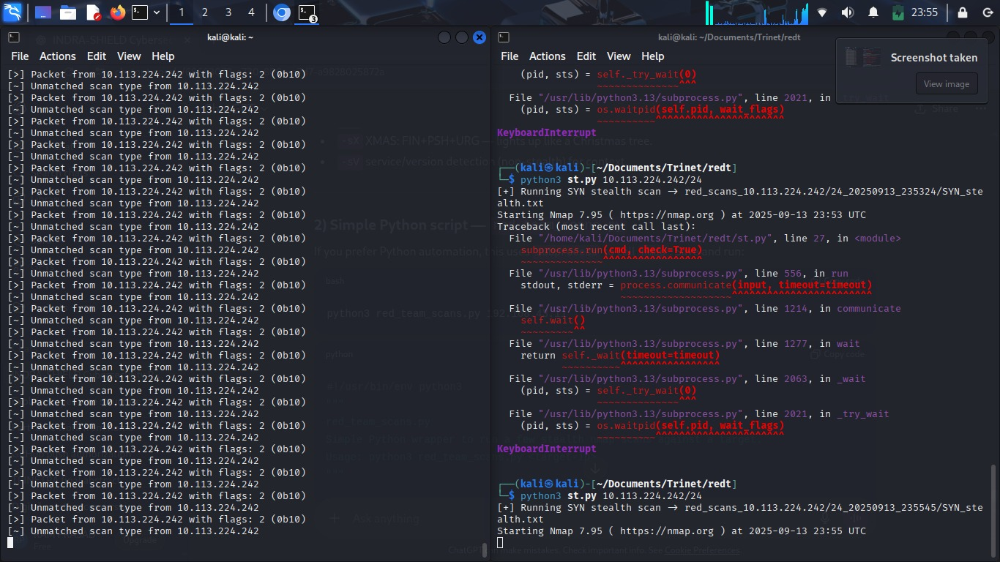
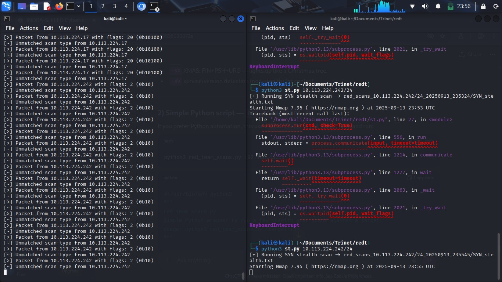
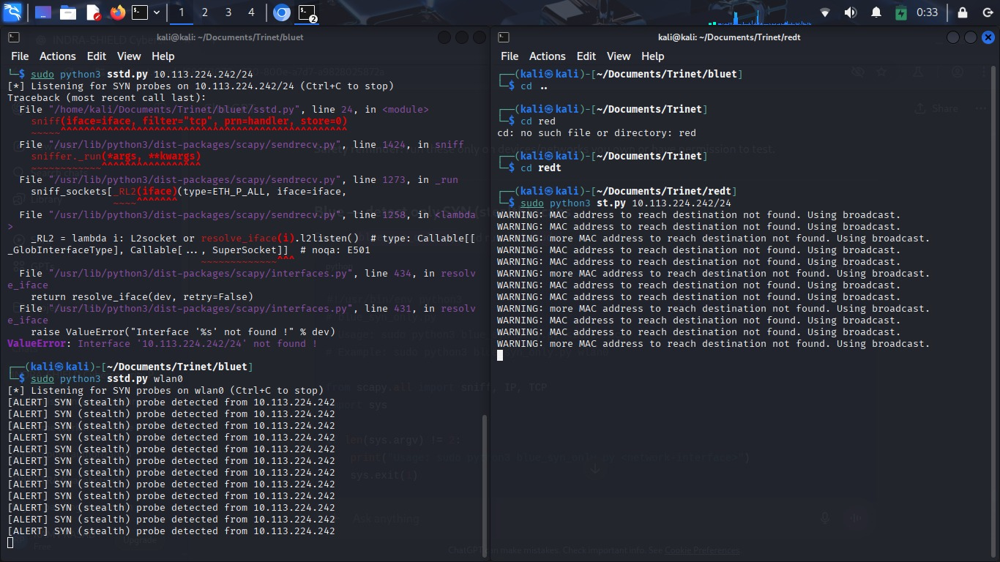
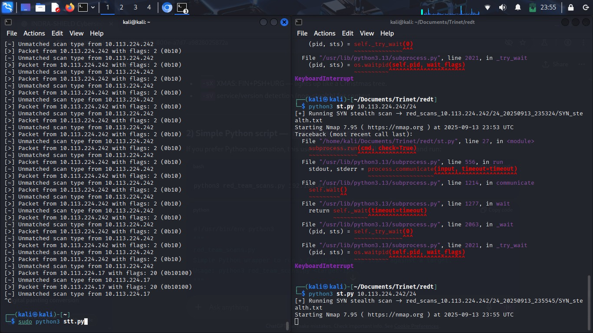
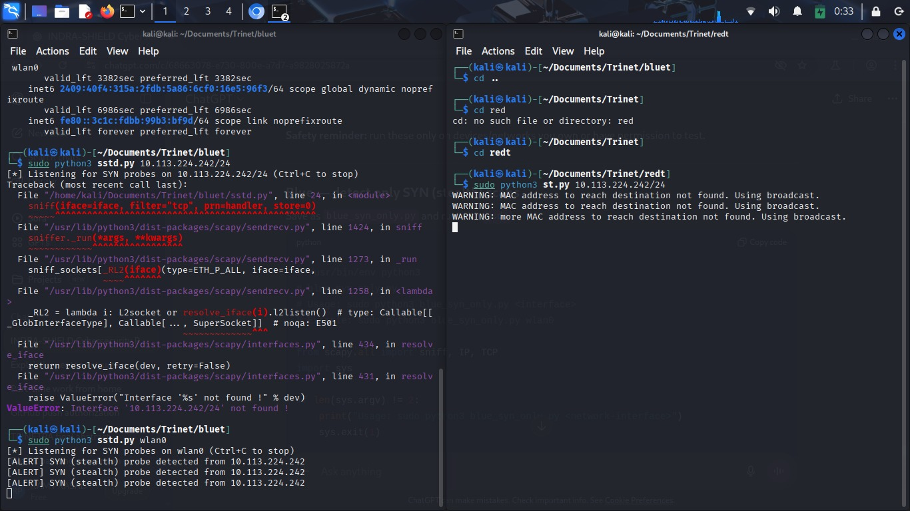
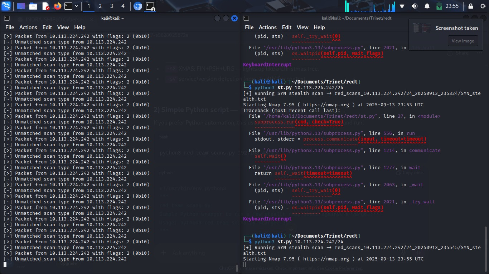
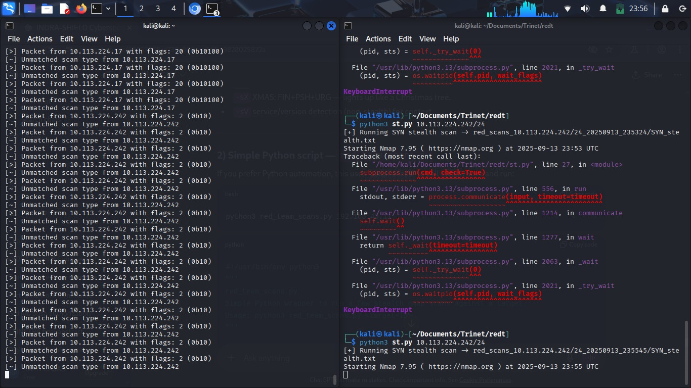
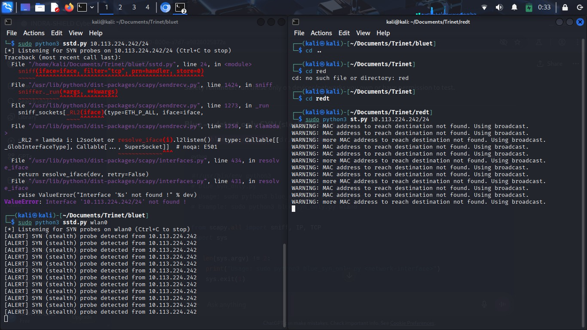
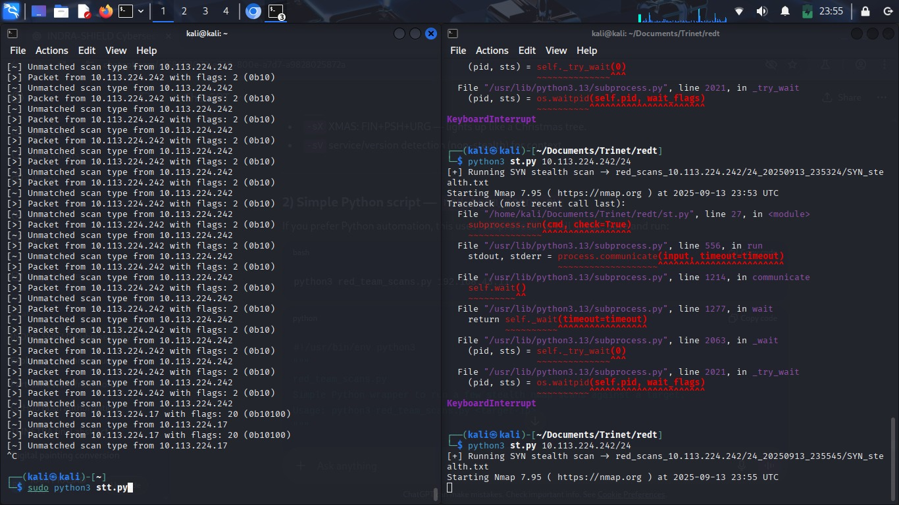
×

Note:"This project is a controlled simulation for educational purpose only. Unauthorized replication or misuse is prohibited"
TRINETRA is a cybersecurity project designed to detect, analyze, and defend against network attacks in real time. It integrates Red Team (attackers), Blue Team (defenders), Honeypot (trap system), and IoT (ESP32/ESP8266 for alerts) into a single ecosystem. This project gives a hands-on simulation of real-world cyberattacks and defenses, making it both educational and practical for modern cybersecurity applications.
---1. Red Team (Attacker Simulation) Red Team uses scanning techniques (SYN, FIN, NULL, Xmas scans, etc.) to probe the target network. Their role is to behave like real attackers trying to find vulnerabilities in servers or systems. 2. Blue Team (Defender Monitoring) The Blue Team continuously monitors incoming traffic using Python scripts (Scapy library). They analyze TCP/IP flags and packet behavior to detect abnormal scans or intrusion attempts. When a scan or suspicious activity is detected, the Blue Team system logs the details. 3. Honeypot (Deception System) The Honeypot pretends to be a real vulnerable machine (fake server). It tricks attackers into interacting with it and collects information about their tools, IP addresses, and behavior. This intelligence is shared with the Blue Team to improve defenses. 4. IoT Device (ESP32/ESP8266) Once an attack is detected, an alert is sent to an IoT device. The ESP32 can trigger a buzzer, LED light, or message notification to immediately alert the system administrator. This brings real-time physical awareness of cyber threats. 5. Defense Action (Blocking) The Blue Team system automatically blocks the attacker’s IP address to stop further attacks. This ensures that the protected server or network remains safe from intrusion attempts.
---✅ Detects multiple scan types (SYN, NULL, FIN, Xmas). ✅ Honeypot traps attackers for intelligence gathering. ✅ IoT-based real-time alerting (ESP32/ESP8266). ✅ Automated IP blocking for defense. ✅ Educational project simulating Red vs Blue cybersecurity operations.
---
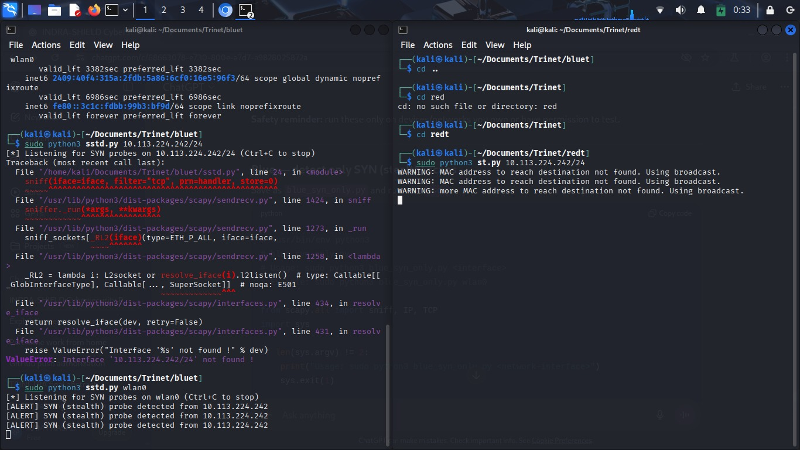
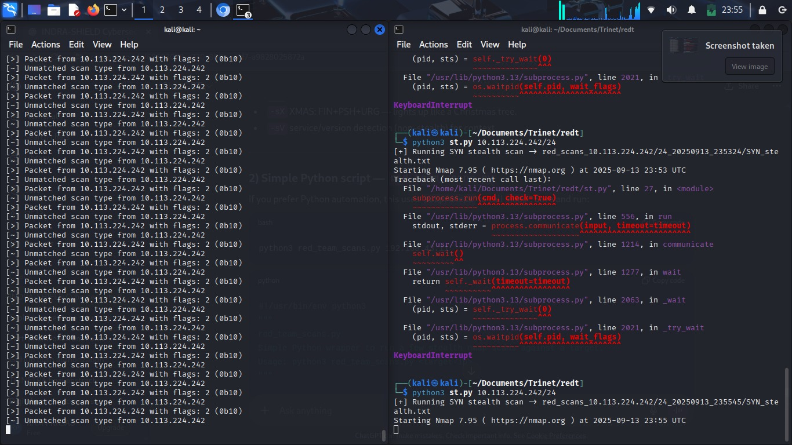
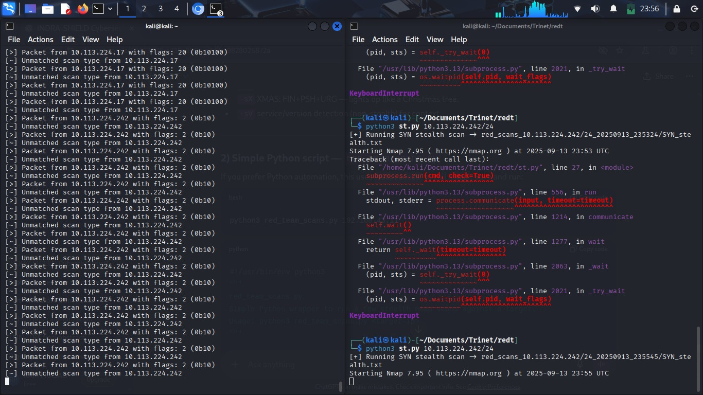
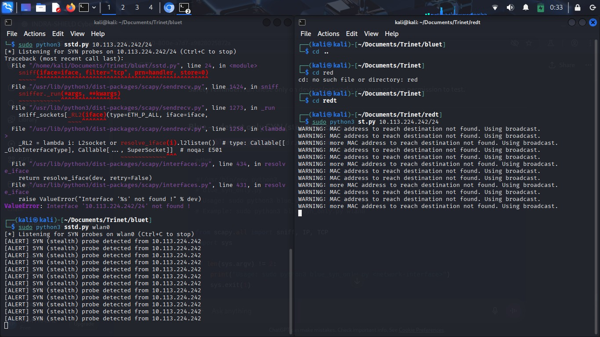
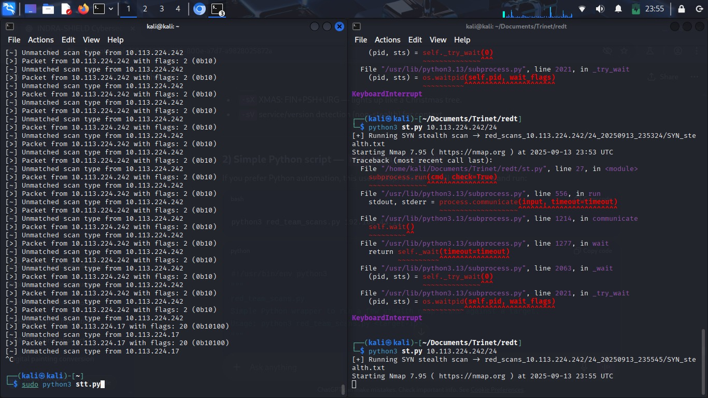
Red Team: Simulates attacker behavior. Blue Team: Detects, analyzes, and defends against threats. Honeypot: Gathers intelligence and misleads attackers. IoT Device: Provides real-time physical alerts.
---College/University cybersecurity learning projects. Simulation of real-world network defense environments. Small-scale intrusion detection systems (IDS). Can be extended to industry use with cloud-based alerts and AI analysis.
---TRINETRA demonstrates how cybersecurity defense systems work in reality by combining network monitoring, deception, and IoT alerts. It gives students practical exposure to both offensive (Red Team) and defensive (Blue Team) roles while integrating cutting-edge IoT technology for real-time alerts.